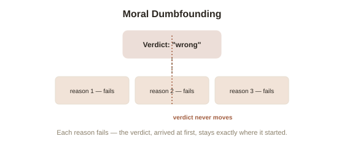

Chapter 2: Moral Dumbfounding — When Reasons Run Out But Judgment Doesn't
Chapter 1 mentioned, in passing, one of Haidt's strangest and most revealing experimental findings: people condemning something as wrong even after every argument for actual harm has been carefully stripped away, and then struggling to explain why. This deserves a full chapter, because it's arguably the single cleanest piece of evidence for the elephant-and-rider model — a case where the rider is caught, in real time, failing to do the job it claims to do.
The consensual-siblings story, built specifically to remove every harm
Haidt's most famous vignette for this research describes two adult siblings, Julie and Mark, who decide to have sex together once, consensually, while on vacation. The story is deliberately, carefully constructed to close off every standard objection in advance: they use two forms of contraception, so pregnancy and any genetic risk to offspring is off the table; it happens once, privately, and they agree never to do it again; and it actually brings them emotionally closer rather than causing any relational harm. Participants are then asked directly: was what they did wrong? The overwhelming majority say yes — and then, when asked to explain why, given that every harm-based objection has been explicitly closed off inside the story itself, most struggle. They reach for objections the story has already ruled out (what about pregnancy risk? what if someone found out and got hurt?), and when those are pointed back out as already addressed, many participants don't change their verdict. They just keep searching for a reason, visibly uncomfortable, while their judgment itself stays completely fixed.
Naming the phenomenon precisely
Haidt called this moral dumbfounding (a state in which someone maintains a confident moral judgment while being unable to produce a coherent reason for it, and continuing to search for reasons even after their initial ones have been logically refuted). This is a genuinely different pattern from simply being wrong about a fact, or changing your mind under good argument — dumbfounded participants don't update their verdict when their stated reasons collapse; the verdict and the reasoning appear to be running on separate tracks entirely, with the verdict arriving first, fully formed, and reasoning showing up afterward purely to defend a position it had no actual role in producing. This is the elephant-and-rider metaphor from Chapter 1, caught directly in the act: the elephant (the fast, automatic, intuitive judgment) has already decided, and the rider (conscious reasoning) is visibly, audibly failing at its self-appointed job of actually justifying the verdict, without that failure changing the verdict at all.

Why this specific finding is harder to dismiss than it might sound
A natural objection is that participants might simply have unstated, legitimate reasons they're bad at articulating on the spot. Haidt's research pushed against this by carefully documenting the actual pattern of dumbfounding: participants weren't silently withholding a real justification — they visibly kept generating and testing candidate reasons, out loud, in real time, watching each one fail against the story's explicit details, and continuing to generate more rather than concluding "I guess it's actually fine." That specific behavioral signature — active, repeated, failed reason-generation, without a corresponding update to the verdict — is what distinguishes dumbfounding from ordinary difficulty articulating a valid point. It looks much more like a mind working backward from a conclusion it didn't consciously choose than a mind that had a good reason all along and just needed a moment to find the words.
What this implies about moral reasoning generally
The uncomfortable generalization Haidt draws from this — and from a broader body of related research — is that moral dumbfounding isn't a rare, unusual glitch confined to unusual vignettes about siblings on vacation. It's a magnified, easy-to-observe version of something happening constantly, in milder form, across ordinary moral and political judgment: verdicts arriving via fast, automatic processes (Chapter 1's six foundations, activated by a situation's specific features) with conscious reasoning recruited afterward, doing real cognitive work, but work aimed at justification and persuasion rather than at genuinely, neutrally determining the answer from scratch. This doesn't mean moral reasoning is worthless — reasoning can and does update judgments over longer timescales, through reflection and exposure to new arguments, which is a large part of how moral views actually do change across a lifetime or a society. It means the reasoning happening in the heat of an immediate moral reaction is doing far less independent, unbiased work than it feels like it's doing from the inside.
Try this
Ideas for noticing or testing this in your own life.
- Try the Julie and Mark story on yourself, honestly: read it, form your verdict, then check each stated harm off the list one at a time — notice whether your verdict actually moves as each one gets closed off, or whether it was fixed from the start.
- Next time you're arguing a moral position and your first reason gets refuted, notice whether you reach for a second reason before reconsidering your conclusion — a small, personal brush with your own elephant and rider in action.
Worth pulling on?
A few loose threads from this chapter — if any of these genuinely grab you, that's a good sign of where to go next.
- A separate, classic line of moral psychology research uses hypothetical dilemmas — like whether to sacrifice one person to save five — to map exactly which brain systems produce fast intuitive verdicts versus slower calculated ones. → The subject of the next chapter: trolley problems and the neuroscience behind them.
- Moral dumbfounding is a specific, moral-domain case of a much broader pattern where confident conclusions arrive before, and largely independent of, the reasoning offered to support them. → Already in the library: Philosophy of Mind's chapter on split-brain confabulation covers a striking, related case from an entirely different angle.